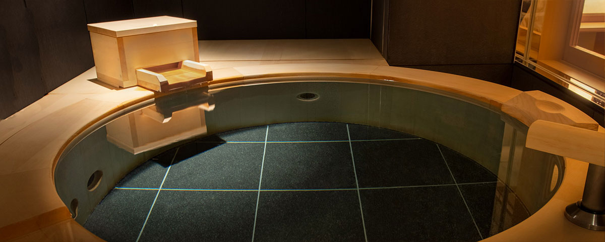

溫泉 自然 洗身 暖心
光彩縈繞的舒適空間
眺望日光充滿生命力的樹木，感受清新微風的吹拂。
客房私湯使用本館專屬源泉的天然溫泉。
在洋溢懷舊典雅氛圍的客房裡，神遊日光的歷史。
獨立湯屋

湯屋介紹
溫泉種類
- 能勢 Art Lake 温泉
- 溫泉療效：肌肉酸痛及僵硬、體寒、末梢迴圈障礙
泡湯須知
- ‧請勿在飯前、飯後、以及飲食後立刻泡湯。尤其應該避免在酒醉狀態下泡湯。
- ‧身體感到極度疲勞時，請先休息。
- ‧開車後，請先讓身體休息30分鐘左右。
- ‧年長者、小孩、以及行動不便的人，請盡量避免單獨進入泡湯。
- ‧ 進入浴池前，應先舀起溫泉水，沖洗手腳，待適應溫度後，再沖洗身體。
- ‧泡湯時，特別是在起床後立即泡湯等時，請務必先補充一杯左右的水，以防止發生脫水等症狀。
預約／聯絡電話
 0570-8754-56
0570-8754-56
大眾溫泉
溫泉介紹
溫泉種類
- 單純溫泉
- 溫泉療效：肌肉酸痛及僵硬、體寒、末梢迴圈障礙
泡湯須知
- ‧請勿在飯前、飯後、以及飲食後立刻泡湯。尤其應該避免在酒醉狀態下泡湯。
- ‧身體感到極度疲勞時，請先休息。
- ‧ 開車後，請先讓身體休息30分鐘左右。
- ‧ 年長者、小孩、以及行動不便的人，請盡量避免單獨進入泡湯。
- ‧ 進入浴池前，應先舀起溫泉水，沖洗手腳，待適應溫度後，再沖洗身體。
- ‧ 泡湯時，特別是在起床後立即泡湯等時，請務必先補充一杯左右的水，以防止發生脫水等症狀。